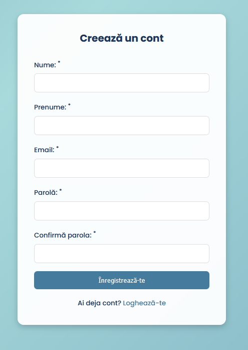
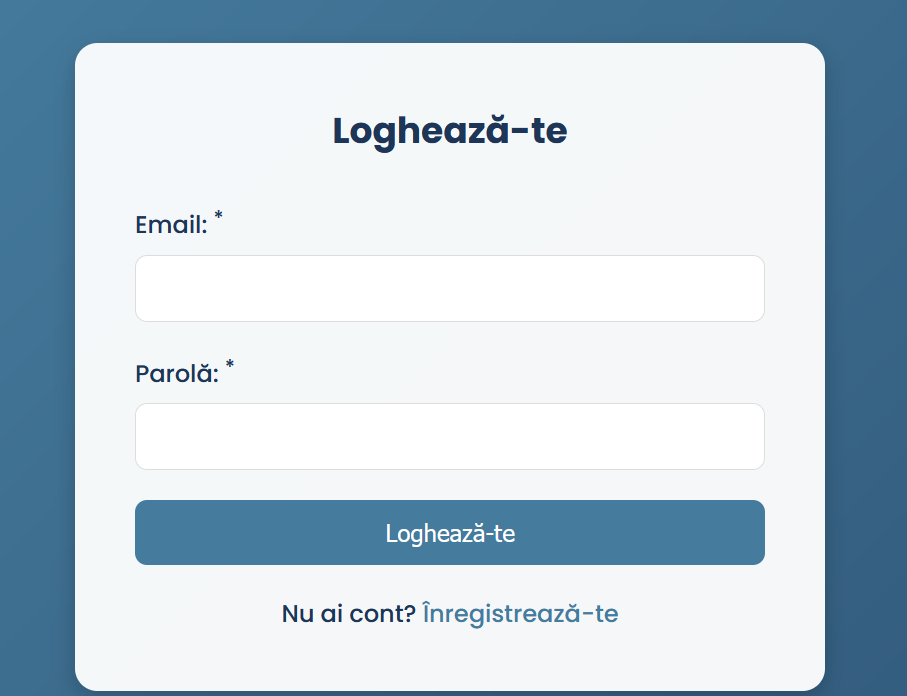
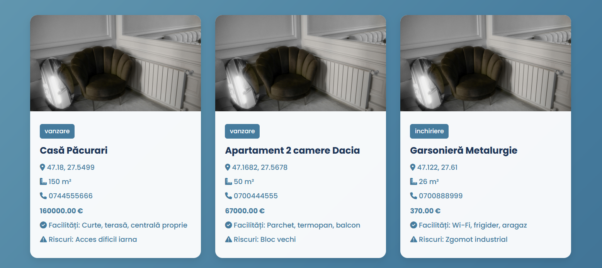
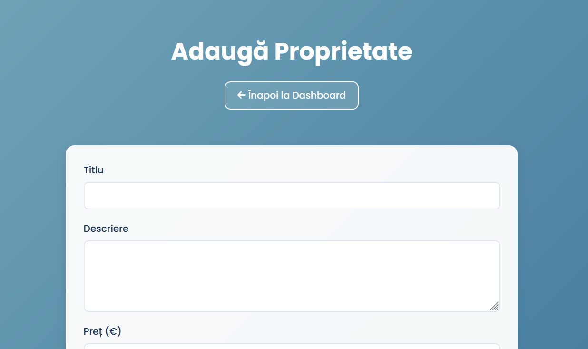
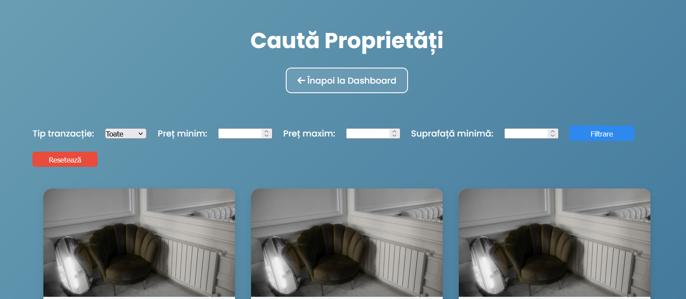

Arhitectura aplicației
Aplicația este construită pe baza arhitecturii Model View Controller (MCV). Proiectul conține o clasă abstractă "Controller" care va fi extinsă de controllere necesare aplicație. Aceste controllere vor instanția view-urile și models-urile necesare. Componentele de tip model se ocup de logica din spate, iar cele de tip view cu generea HTML-ului. Controllerele fac legătura dintre cele 2 componenete.
Detalii de implementare
Frontend-ul este construit cu HTML, CSS și JavaScript. Backend-ul este implementat în PHP, baza de date fiind MySQL hostata cu ajutorul XAMPP. JWT este folosit pentru autentificare.
Baza de date
Este formată din 2 tabele: users, properties

Tehnologii utilizate
- Frontend: HTML5, CSS3, JavaScript
- Backend: PHP
- Bază de date: MySQL
- Autentificare: JWT
- API-uri: Geolocation API, OpenStreetMap
Securitate
Fiecare cerere către backend validează JWT-ul. Datele utilizatorului sunt separate și protejate per cont. Parolele sunt hash-uite in baza de date. De asemeanea este protectie împotriva la SQL Injection și XSS.
Funcționalități
- Înregistrare și autentificare cu JWT a utilizatorilor si administatorului.
ÎnregistrareAutentificare
- Vizualizare a imobilelor
Vizualizare Imobile
- Adăugarea a unui imobil la vânzare/închiriere
Adăugare Imobil
- Căutarea de imobile după anumite criterii
Căutare Imobile